Cambridge AS9618 | Paper 2 | Section 11: Programming
Writing complete program fragments
Flexible-depth lesson
S11.01, S11.04, S11.06, S11.07 | Learn from the diagrams, test the method, then choose the practice you need.
Choose a Quick, Full or Deep route
Quick route
Use the diagnostic, learning objectives, first worked example and foundation question. Stop once the learner can explain the central distinction accurately.
Full route
Use every knowledge-point material set, the worked method, the terminology check and all questions.
Deep route
Add the prerequisite refresher, ask learners to connect the concept checklist, discuss the labelled extension and complete a transfer question without a model answer.
Part 1 | optional depth
Prerequisite knowledge and quick diagnostic
Recall S9.07, S9.06, S11.02 before starting this lesson.
Give one accurate definition or method step before continuing. If it is missing, revisit only that prerequisite.
Open optional prerequisite refresher
Document an algorithm using structured English, a flowchart or pseudocode; write pseudocode from structured English or a flowchart, and draw a flowchart from structured English or pseudocode while preserving the same algorithm.
Use structured English, flowcharts and pseudocode; convert between representations.
The three basic algorithm constructs are sequence, selection and iteration (repetition); students must recognise and use each construct, including combinations of constructs.
Understand and use sequence, selection and iteration.
Write pseudocode for declaration and initialisation of constants; declaration of variables; assignment of values; expressions using arithmetic or logical operators; input from the keyboard; and output to the console.
Use declarations, constants, variables, assignment, arithmetic/logical operations and input/output.
Part 2 | knowledge-point material sets
Learn each point through visuals
Follow the map, the three-part explanation and the concrete cue. Open precise wording only after the idea is clear.
Open the concept checklist and choose what to teach
Evidenceit is well suited when the count or bounds are known, but a pre-condition or post-condition loop is better when the number of repetitions depends on…
ChoiceUse IF statements, including the ELSE clause and nested IF statements
ReasonA FOR...NEXT loop is count-controlled
S11.04 diagrams
1 / 5
01
Diagram · 1 of 5
Use IF when a Boolean condition decides the route
Open text transcript
IF selection
Use when
Cambridge-style pattern
action is needed only when condition is true
IF Found THEN ... ENDIF
IF...ELSE
two paths are needed
IF Mark = 50 THEN ... ELSE ... ENDIF
02
Concrete example · 2 of 5
Pre-condition loop: check before running
Open text transcript
A WHILE loop checks its condition before each iteration and may run zero times.
Input Password before testing whether it differs from CorrectPassword.
Inside the loop, output the retry message and input a replacement Password.
Output Access granted only after the WHILE condition becomes false.
03
Diagram · 3 of 5
Post-condition loop: run once, then check
Open text transcript
A REPEAT...UNTIL loop checks its condition after executing the body.
Place INPUT Mark once inside REPEAT so each attempt obtains one value.
Do not add a duplicate INPUT before the loop.
Stop when Mark is between 0 and 100 inclusive.
04
Analogy / use · 4 of 5
Conditions decide the path
Open text transcript
Use IF for a Boolean condition or range and close it with ENDIF.
Use CASE for several discrete values of one expression and close it with ENDCASE.
Test marks 49, 50 and 51 to verify the pass boundary.
05
Comparison · 5 of 5
Three control-flow ideas
Open text transcript
Sequence answers what happens next and depends on statement order.
Selection answers which path is taken and uses IF or CASE structures.
Iteration answers what repeats and when repetition stops.
FOR, WHILE and REPEAT are iteration forms with different controls.
Open precise syllabus wording
Use IF/ELSE/nested selection, CASE, count-controlled loops, post-condition and pre-condition loops.
Use IF statements, including the ELSE clause and nested IF statements; CASE statements; count-controlled loops; post-condition loops; and pre-condition loops.
03
S11.06 · decision
Procedure · Parameters · Passed · Reference
Concept map
procedureparameterspassedreferencevalue
See how it works
Evidenceuse parameters with none, one or more values passed by reference or by value
Choiceexplain when the use of a procedure is appropriate
ReasonDefine and use a procedure
S11.06 diagrams
1 / 4
01
Diagram · 1 of 4
Same procedure body, different final result
Open text transcript
Side-by-side comparison
By value
By reference
Header clue
Number : INTEGER
BYREF Number : INTEGER
What is passed
a copy of the value
02
Diagram · 2 of 4
Use functions for returned values and procedures for actions
Open text transcript
A function returns a value; a procedure performs an action.
IsPass returns a BOOLEAN based on whether Mark is at least 50.
Close the function's IF with ENDIF before ENDFUNCTION.
DisplayResult outputs its parameters and returns no value.
03
Concrete example · 3 of 4
Pass data into a module and return only what is needed
Open text transcript
GetValidMark inputs and validates a mark, then returns a valid INTEGER.
CalculateGrade receives Mark and returns a grade character.
DisplayResult is a procedure that performs OUTPUT and returns no value.
Return values and screen-output effects must not be conflated.
04
Diagram · 4 of 4
A procedure performs actions and returns no value
Open text transcript
A procedure performs an action and does not return a value.
A function returns a value and can be used in an expression.
Do not describe returning a value as optional for a Cambridge procedure.
Open precise syllabus wording
Understand and use procedures with parameters passed by reference and by value.
Define and use a procedure; explain when the use of a procedure is appropriate; use parameters with none, one or more values passed by reference or by value.
04
S11.07 · decision
Functions · Return · Values · Expression
Concept map
functionsreturnvaluesexpression
See how it works
EvidenceA function is used in an expression and its return value replaces the function call
Choiceexplain when the use of a function is appropriate
ReasonREAL) RETURNS REAL returns Price 0.20, so Total <- Price + CalculateVAT(Price) uses the returned value in an expression
S11.07 diagrams
1 / 4
01
Concrete example · 1 of 4
Function calls can appear where a value is needed
Open text transcript
Calls and returned values
CALL DisplayMenu()
procedure call performs an action
VAT <- CalculateVAT(Price)
function return value is stored
Total <- DisplayMenu()
procedure does not return a value
OUTPUT CalculateVAT(Price)
02
Comparison · 2 of 4
Use CASE for clear values of one expression
Open text transcript
CASE compares one expression with several discrete values.
Each listed value has its own action and OTHERWISE handles unlisted values.
Close the complete multi-way selection with ENDCASE.
03
Diagram · 3 of 4
Use functions for returned values and procedures for actions
Open text transcript
A function returns a value; a procedure performs an action.
IsPass returns a BOOLEAN based on whether Mark is at least 50.
Close the function's IF with ENDIF before ENDFUNCTION.
DisplayResult outputs its parameters and returns no value.
04
Concrete example · 4 of 4
A function returns a value to the caller
Open text transcript
Function
Cambridge-style pseudocode
FUNCTION CalculateVAT(Price : REAL) RETURNS REAL
RETURN Price 0.20
ENDFUNCTION
VAT <- CalculateVAT(120.00)
When it fits
Use a function when a calculated, searched or checked result must be used later in the algorithm.
Open precise syllabus wording
Understand and use functions, including return values in expressions.
Define and use a function; explain when the use of a function is appropriate. A function is used in an expression and its return value replaces the function call.
Supporting diagram library
1 / 25
01
Diagram · 1 of 25
Loops repeat with control
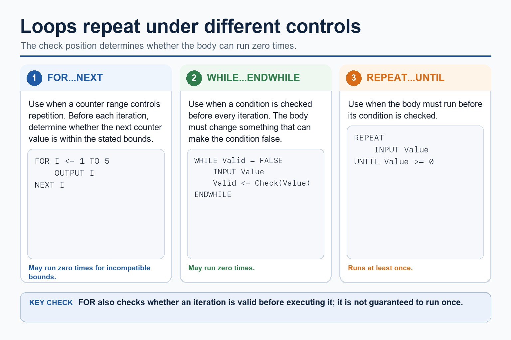
Open text transcript
A FOR loop uses a counter range and checks whether the next iteration is within its bounds.
A FOR loop may execute zero times when its bounds are incompatible.
A WHILE loop checks its condition before each iteration and may execute zero times.
A REPEAT loop checks after the body and therefore runs at least once.
02
Diagram · 2 of 25
Same logic, different exam language
Open text transcript
Cambridge pseudocode uses IF, THEN, ELSE and ENDIF for a two-way selection.
Mark 50 follows the pass branch when the condition uses greater than or equal to 50.
Java braces may support understanding but are not Cambridge pseudocode.
03
Diagram · 3 of 25
Order changes meaning
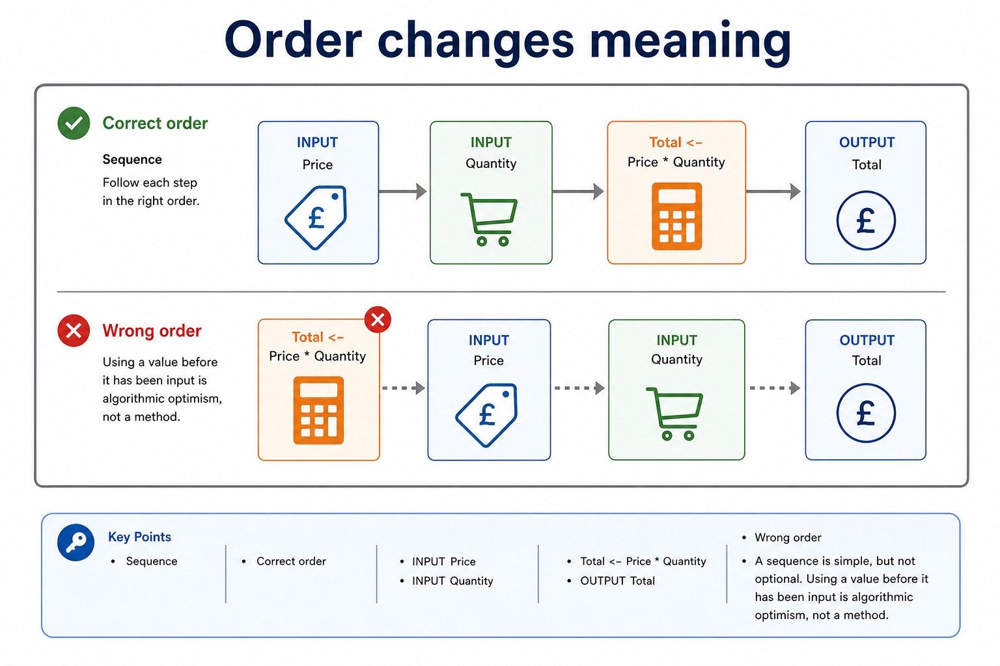
Open text transcript
Sequence
Correct order
INPUT Price
INPUT Quantity
Total <- Price Quantity
OUTPUT Total
Wrong order
A sequence is simple, but not optional. Using a value before it has been input is algorithmic optimism, not a method.
04
Diagram · 4 of 25
Run a small loop by hand
Open text transcript
Interactive trace
FOR Count <- 1 TO
Choose a loop limit to build a trace table.
05
Diagram · 5 of 25
The difference is when the condition is tested
Open text transcript
WHILE vs REPEAT
REPEAT...UNTIL
Condition checked
before the loop body
after the loop body
Minimum iterations
Continues when
condition is TRUE
06
Diagram · 6 of 25
A FOR loop has a counter, a start value and an end value
Open text transcript
FOR loop structure
General pattern
FOR Counter <- StartValue TO EndValue
// repeated statements
NEXT Counter
Concrete example
Total <- 0
FOR Count <- 1 TO 5
07
Diagram · 7 of 25
A special value can stop the loop
Open text transcript
Initialise Total and input the first Number before WHILE.
While Number is not -1, add Number to Total and input the next Number.
The repeated input changes the condition and allows the loop to terminate.
The sentinel -1 stops the loop and is not included in Total.
08
Diagram · 8 of 25
Keep asking until the input is valid
Open text transcript
Validation pattern
REPEAT version
OUTPUT "Enter mark 0 to 100"
INPUT Mark
UNTIL Mark = 0 AND Mark <= 100
WHILE version
WHILE Mark < 0 OR Mark 100
OUTPUT "Invalid"
09
Diagram · 9 of 25
The mark-winning difference is the returned value
Open text transcript
Procedure vs function
Procedure
Function
Main purpose
perform an action
return a value
PROCEDURE Name(...)
FUNCTION Name(...) RETURNS Type
10
Diagram · 10 of 25
A subprogram interface connects caller and header
Open text transcript
A subprogram interface gives the caller the name, parameter list and types, and any return value/type.
A procedure header or function header declares that interface; a function header also declares its return type.
A parameter is named in the header; an argument is the actual value or variable supplied at a call.
RETURN sends a function value to the caller; displayed output is an effect, not a return value.
11
Diagram · 11 of 25
Calculate a function return value
Open text transcript
Interactive return simulator
Use CalculateVAT(Price) to return Price 0.20 .
12
Diagram · 12 of 25
Pick the check that matches the rule
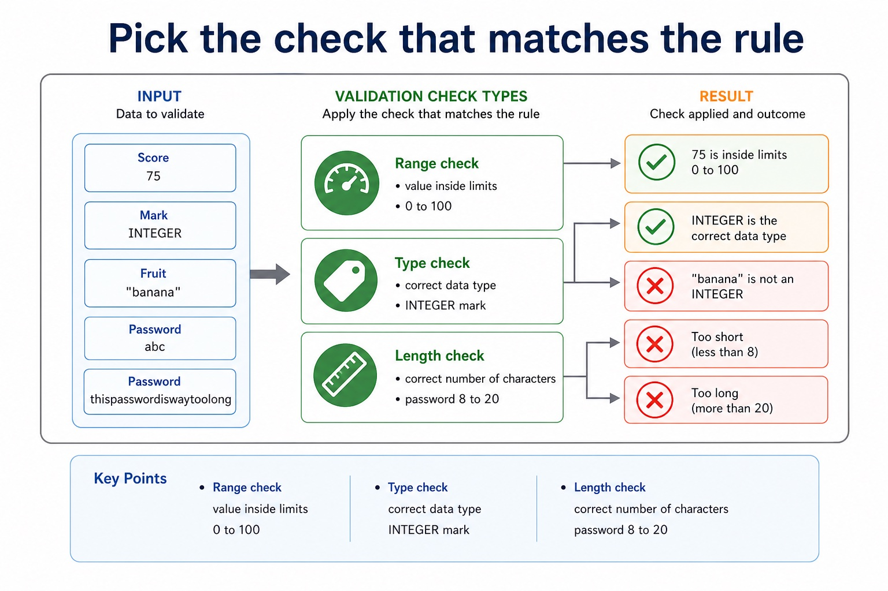
Open text transcript
Validation check types
Range check
value inside limits
0 to 100
Type check
correct data type
INTEGER mark
"banana"
13
Diagram · 13 of 25
Validation and modularity support each other
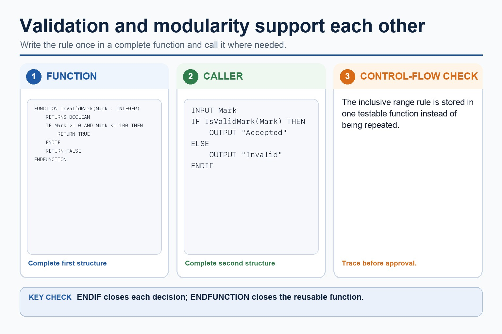
Open text transcript
IsValidMark returns TRUE only for marks from 0 to 100 inclusive.
Close the valid branch with ENDIF before the false return.
Close the reusable function with ENDFUNCTION.
Call the function instead of repeating the validation condition.
14
Diagram · 14 of 25
Modular design splits a solution into smaller named parts
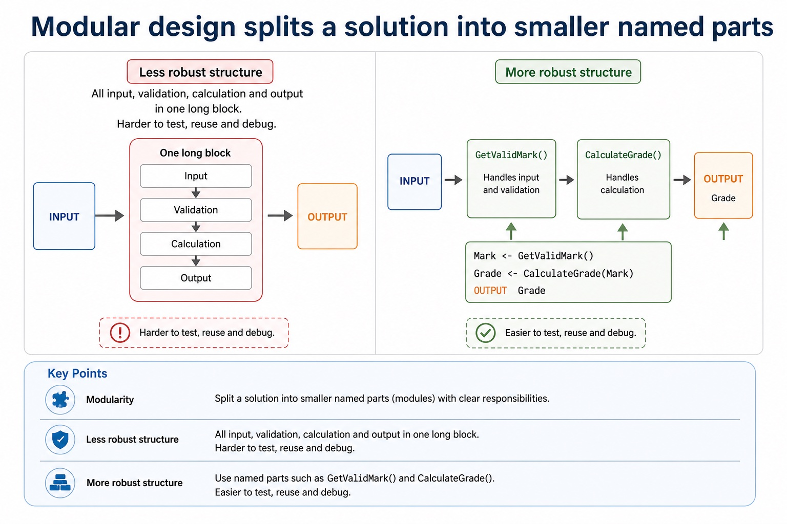
Open text transcript
Modularity
Less robust structure
All input, validation, calculation and output in one long block. Harder to test, reuse and debug.
More robust structure
Mark <- GetValidMark()
Grade <- CalculateGrade(Mark)
OUTPUT Grade
15
Diagram · 15 of 25
Choose a module for each responsibility
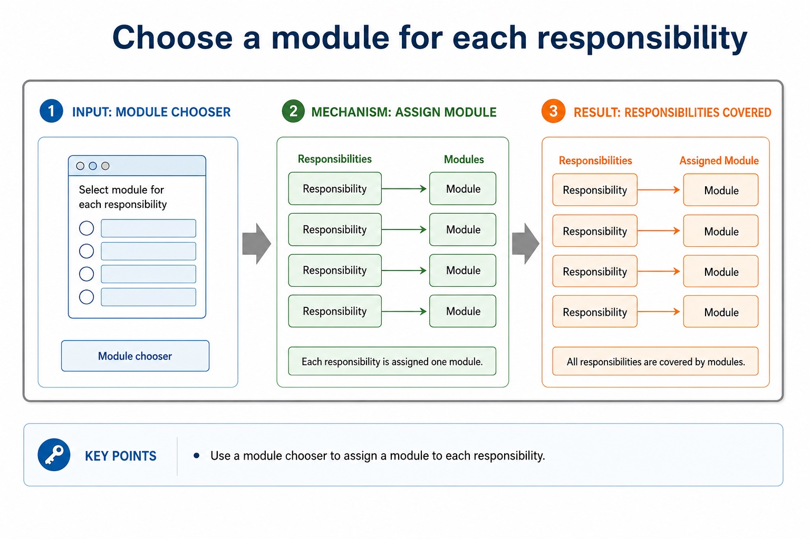
Open text transcript
Module chooser
Responsibility
16
Diagram · 16 of 25
A robust program handles expected misuse without collapsing
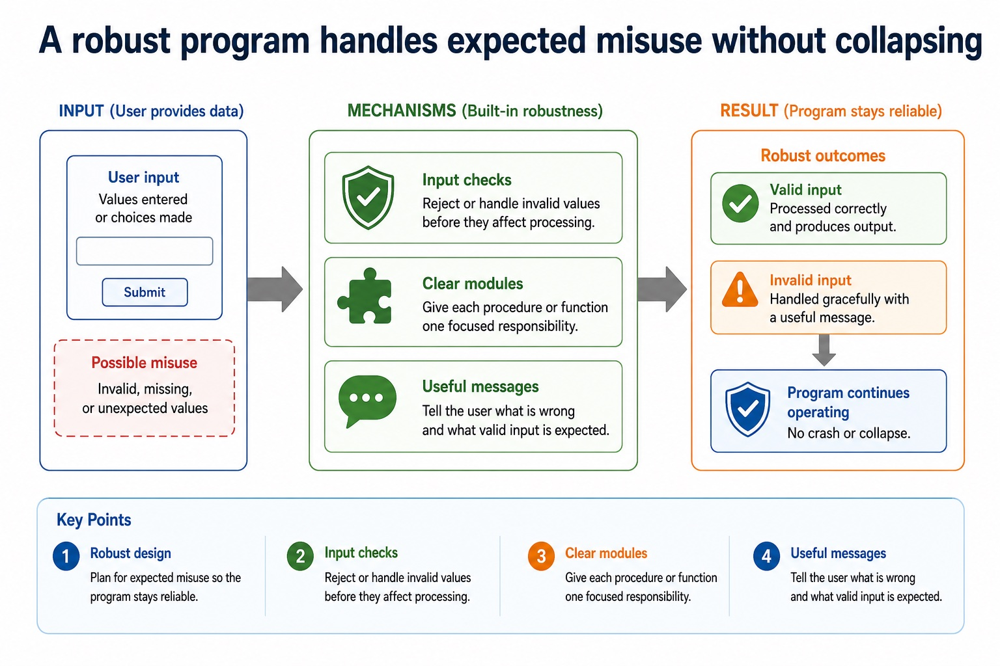
Open text transcript
Robust design
Input checks
Reject or handle invalid values before they affect processing.
Clear modules
Give each procedure or function one focused responsibility.
Useful messages
Tell the user what is wrong and what valid input is expected.
17
Diagram · 17 of 25
Validation checks whether data is acceptable for the program
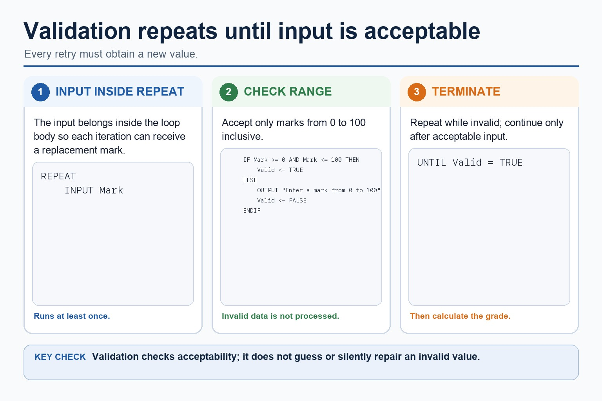
Open text transcript
Place INPUT Mark inside REPEAT so every retry reads a new value.
Set Valid to TRUE only when Mark is between 0 and 100 inclusive.
Otherwise output the valid range, set Valid to FALSE and repeat.
Close the selection with ENDIF and terminate with UNTIL Valid = TRUE.
18
Diagram · 18 of 25
Check whether a mark input is robustly acceptable
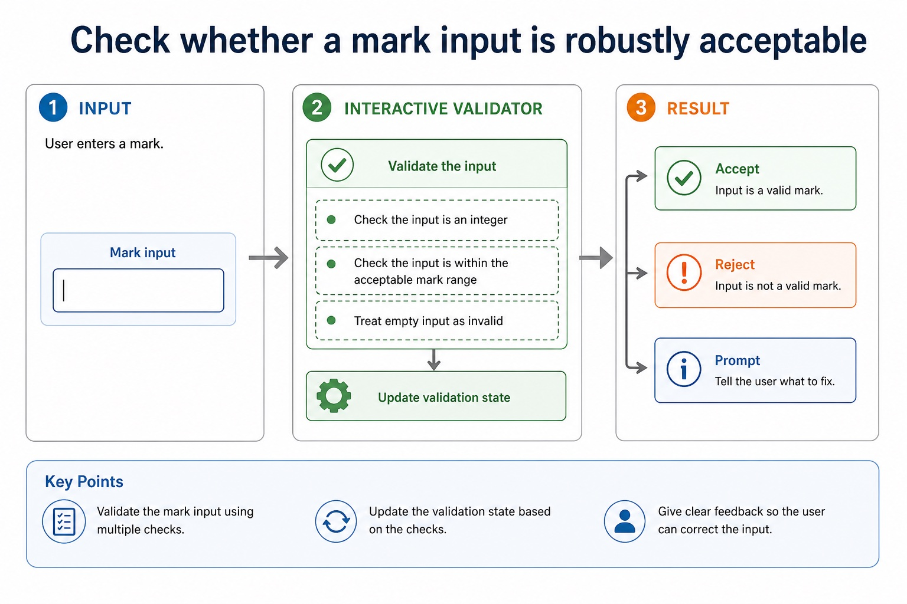
Open text transcript
Interactive validator
19
Diagram · 19 of 25
Arrays need consistent indexing and meaningful loop bounds
Open text transcript
Arrays and loops
Question wording
Good answer feature
Mark-risk
10 marks
FOR Index <- 1 TO 10
looping 0 to 10 gives 11 iterations
highest score
20
Diagram · 20 of 25
Use a checklist before calling a fragment finished
Open text transcript
Mark checklist
21
Diagram · 21 of 25
Review answers should be traceable
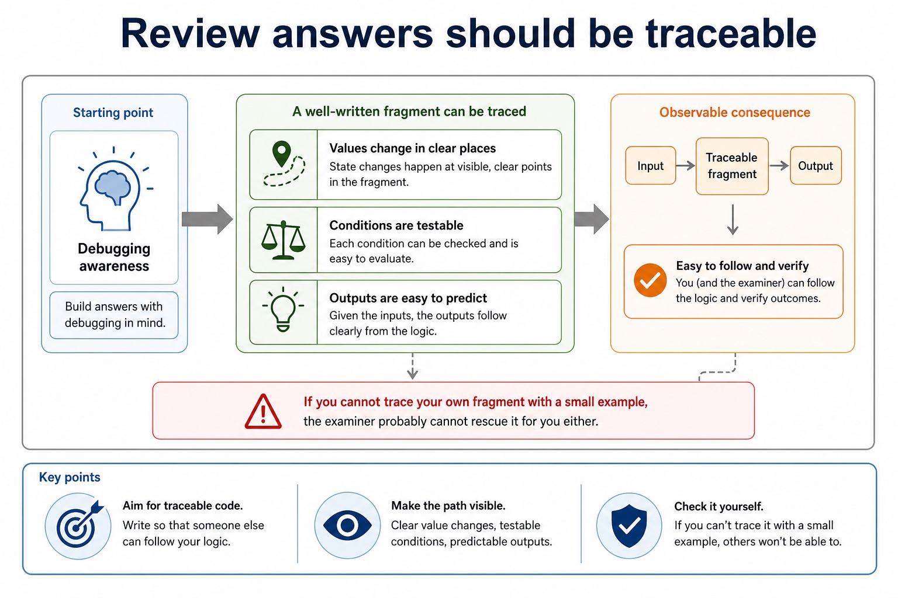
Open text transcript
Debugging awareness
A well-written fragment can be traced: values change in clear places, conditions are testable, and outputs are easy to predict.
If you cannot trace your own fragment with a small example, the examiner probably cannot rescue it for you either.
22
Diagram · 22 of 25
File fragments need open, process and close
Open text transcript
OPENFILE "Scores.txt" FOR READ
WHILE NOT EOF("Scores.txt")
READFILE "Scores.txt", Line
OUTPUT Line
ENDWHILE
CLOSEFILE "Scores.txt"
23
Diagram · 23 of 25
A complete fragment has setup, logic and result
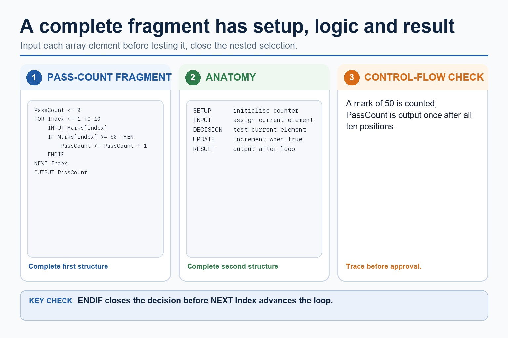
Open text transcript
Initialise PassCount before processing ten array positions.
Input the current element before testing it.
Close the passing-mark selection with ENDIF before NEXT Index.
Output PassCount once after the loop.
24
Diagram · 24 of 25
Section 11 tools become stronger when combined
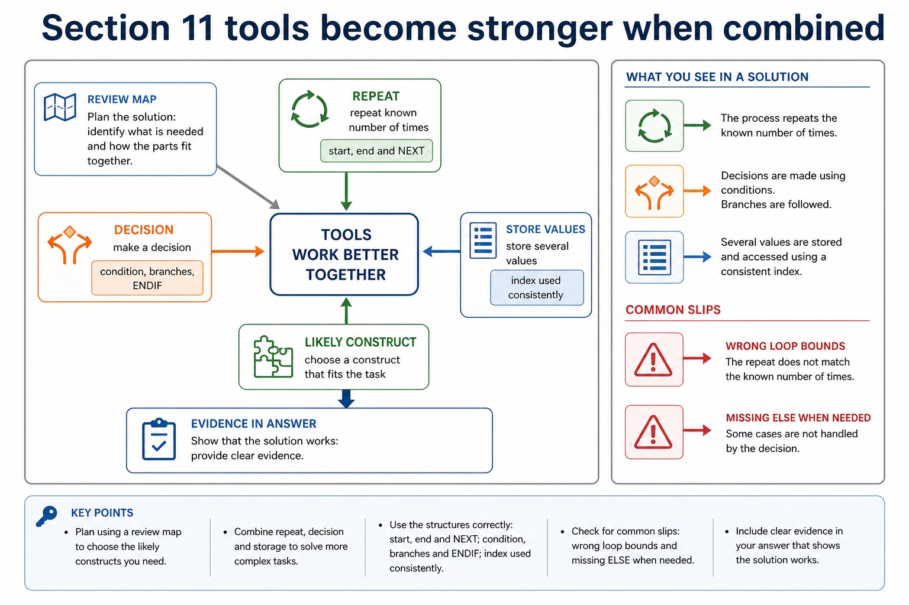
Open text transcript
Review map
Likely construct
Evidence in answer
Common slip
repeat known number of times
start, end and NEXT
wrong loop bounds
make a decision
25
Diagram · 25 of 25
Review fragments often need input checks
Open text transcript
A complete validation fragment prompts for and inputs Mark inside REPEAT.
Set Valid to TRUE when Mark is between 0 and 100 inclusive; otherwise set it to FALSE.
Close the selection with ENDIF and repeat until Valid is TRUE.
Every invalid retry must read a replacement Mark.
Apply the idea
Worked method
01Use a procedure and a function
02PROCEDURE Increase(BYREF Number
03INTEGER, BYVAL Amount
04INTEGER) changes the caller's Number by Amount.
05REAL) RETURNS REAL returns Price 0.20, so Total <- Price + CalculateVAT(Price) uses the returned value in an expression.
06In Increase(Score, 5), Number and Amount are parameters while Score and 5 are arguments.
Open precise terminology and exam facts
Implement and write pseudocode from a given design presented as either a flowchart or structured English.
Use IF statements, including the ELSE clause and nested IF statements; CASE statements; count-controlled loops; post-condition loops; and pre-condition loops.
Define and use a procedure; explain when the use of a procedure is appropriate; use parameters with none, one or more values passed by reference or by value.
Define and use a function; explain when the use of a function is appropriate. A function is used in an expression and its return value replaces the function call.
To translate a flowchart, follow arrows from Start, convert input/output symbols directly, convert diamonds into IF/CASE or loop conditions, and preserve every branch and reconnection. To translate structured English, identify its controlled verbs and indentation before selecting Cambridge constructs.
The answer must be Cambridge pseudocode, not Java: use assignment arrow, THEN/ENDIF, FOR...NEXT, WHILE...ENDWHILE or REPEAT...UNTIL as appropriate. Trace both versions with the same data to confirm equivalence.
Use IF...THEN...ELSE...ENDIF when a Boolean condition selects between paths. An ELSE clause supplies the false path. In nested IF statements, every inner and outer IF must be closed and the indentation must show which ELSE belongs to which IF.
Use CASE...OF...OTHERWISE...ENDCASE when one expression is compared with several discrete values. CASE is not a replacement for range or compound-condition decisions unless the stated values cover the requirement correctly.
A count-controlled loop uses FOR...TO...NEXT when the repetition count or inclusive counter range is known before the loop starts. The counter, start value and end value define the iterations; NEXT closes the loop.
Justify FOR from the problem: it is well suited when the count or bounds are known, but a pre-condition or post-condition loop is better when the number of repetitions depends on input or a stopping condition.
A WHILE...ENDWHILE loop is a pre-condition loop: it tests before the body and may run zero times. A REPEAT...UNTIL loop is a post-condition loop: it executes the body before testing and therefore runs at least once. A FOR...NEXT loop is count-controlled.
Select and justify the loop structure from the problem: use FOR when the count is known, WHILE when execution may be unnecessary and continuation is tested first, and REPEAT when the body must run once before a stopping condition can be tested. The justification must use the scenario, not only say that one loop is easier.
Beyond syllabus / 延伸知识（不要求背诵）
consistent style, modularity and automated tests reduce maintenance errors in larger programs.
Part 3 | select by learner need
Practice by question type
applyrecallfoundation2 marks
Question 1. What is the difference between BYVAL and BYREF?
Show answer and marking guidance
Answer: BYVAL supplies a value/copy; BYREF aliases the caller variable so changes can persist.
Marking guidance: Award one mark for each distinct, technically accurate point or method step.
Common error: For the command word apply, perform that exact action; do not replace it with an unrelated fact.
applyrecallapplication2 marks
Question 2. Should Java braces appear in a Cambridge pseudocode answer?
Show answer and marking guidance
Answer: No; use Cambridge keywords and terminators.
Marking guidance: Award one mark for each distinct, technically accurate point or method step.
Common error: Do not repeat the same point in different words; each mark needs a separate idea or method step.
statewritetransfer2 marks
Question 3. State two precise facts about writing complete program fragments.
Show answer and marking guidance
Answer: Implement and write pseudocode from a given design presented as either a flowchart or structured English. Use IF statements, including the ELSE clause and nested IF statements; CASE statements; count-controlled loops; post-condition loops; and pre-condition loops.
Marking guidance: Award one mark for each distinct fact; do not credit a repeated point.
Common error: Do not copy the worked example unchanged; transfer the method and check it against the new context.
Related past-paper indexes
Reference
Marks
Command word
Question type
9618/22/S/25 Q10(a)
8
complete
trace
9618/22/S/25 Q10(b)
7
complete
trace
9618/21/S/25 Q7(a)
6
write
write
9618/23/S/25 Q1(b)
5
complete
recall
Index only: Cambridge question and mark-scheme wording is not reproduced on this public course page.
Part 4 | close when ready
Summary and exam reminders
Summary
Define writing complete program fragments with the exact technical vocabulary expected by the syllabus.
Use the lesson method on a fresh context and show the intermediate decision, representation or calculation.
Match the shape of the answer to the command word and the available marks.
Check the final answer against the scenario instead of repeating a memorised sentence.
Common error to correct
Students often think working Java automatically means good pseudocode. Correction: Paper 2 rewards clear Cambridge-style algorithm expression.
Exam technique
Follow the command word: state gives a fact; explain links a cause to a consequence; compare covers both sides.
Match the number of independent points or method steps to the available marks.
For writing complete program fragments, use the exact technical term before applying it to the scenario.